|
Jiawei Li
Hi 👋🏻! I'm Jiawei Li, a third-year PhD student at the School of Computer Science and Technology, Beijing Institute of Technology (2023-present), under the guidance of Prof. Yang Gao.
I received my master's degree from the School of Computer Science and Technology, Beijing Institute of Technology (2020-2023), and my bachelor's degree in Software Engineering from the School of Software, Northeastern University (2016-2020). Previously, I completed two internships at Meituan (2022.05-2022.09 and 2023.06-2024.04).
I'm an ESFP🥳. In my free time, I'm passionate about 🥾hiking and exploring scenic landscapes 🏔️. I'm also hoping to pick up new skills like 📸photography, 🎤singing, and playing a 🎹musical instrument! I plan to share my photography here in the future. Stay tuned! 📷✨
Email /
CV /
Google Scholar /
Semantic Scholar /
Github /
|
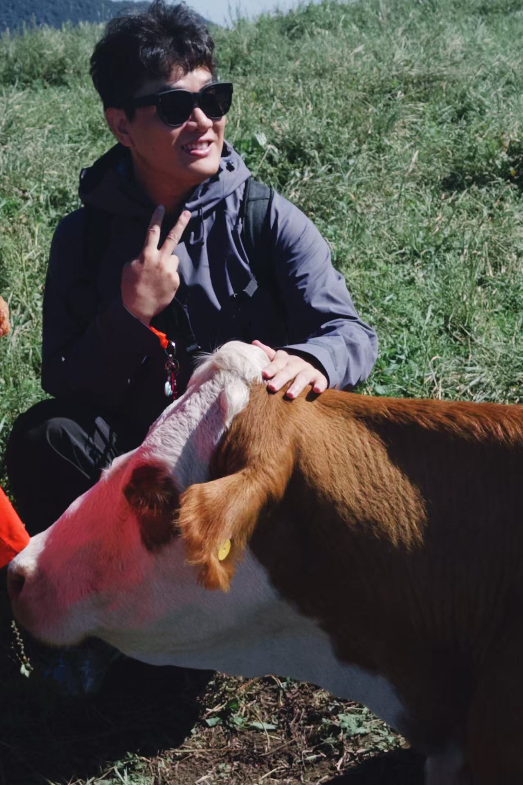
|
Research
I am fascinated by natural language processing🤖💭 and curious about the capabilities of large language models (LLMs) and underlying mechanisms 🔍.
Currently, I focus on reasoning of LLMs (eg., reasoning ability evolution, reinforcement alignment and efficient reasoning). Concurrently, I am researching the application of LLMs in vertical domains, with an emphasis on Agents.
Representative papers are as follows.
|
|
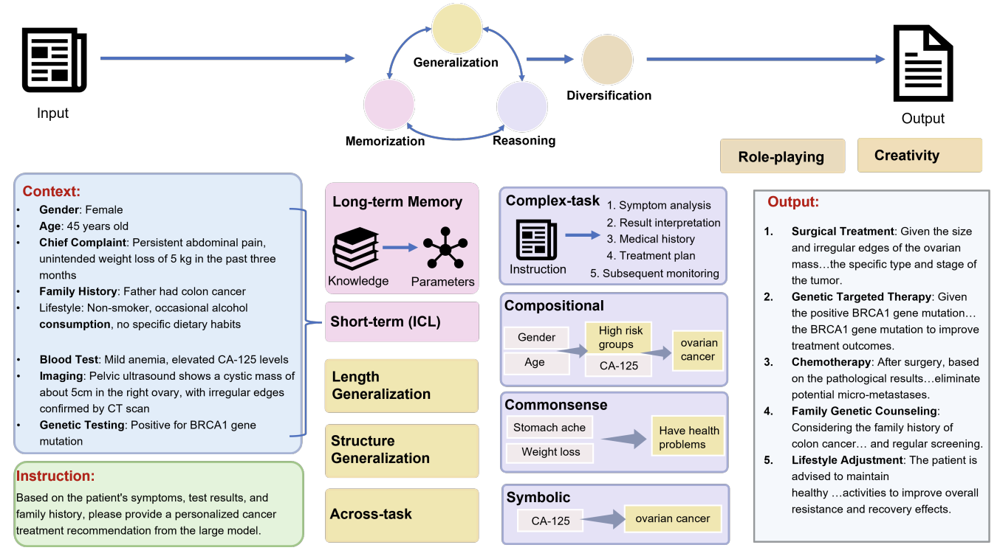
|
Fundamental capabilities and applications of large language models
Jiawei Li, Yizhe Yang, Yu Bai, Xiaofeng Zhou, Yinghao Li, Huashan Sun, Yuhang Liu, Xingpeng Si, Yuhao Ye, Yixiao Wu, Yiguan Lin, Bin Xu, Bowen Ren, Chong Feng, Yang Gao, Heyan Huang
ACM Computing Surveys, 2025
|
|
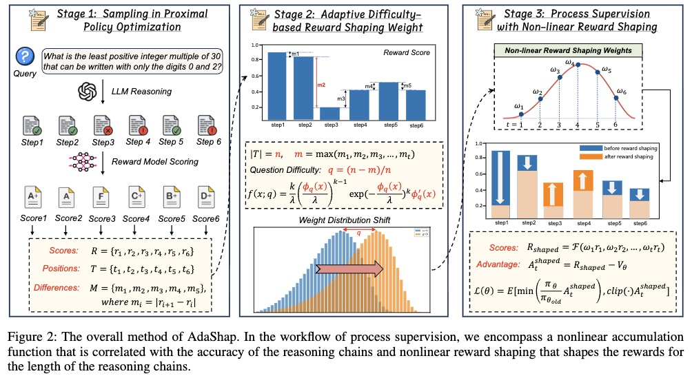
|
AdaShap: Combat Reward Hacking for Reasoning via Dynamic Non-linear Reward Shaping
Jiawei Li, Yang Gao, Xinyue Liang, Yizhe Yang, Huashan Sun, Chong Feng.
Under Review, 2025
|
|
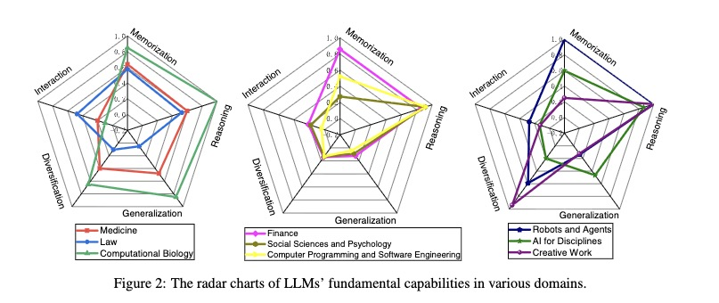
|
Fundamental capabilities of large language models and their applications in domain scenarios: A survey
Jiawei Li, Yizhe Yang, Yu Bai, Xiaofeng Zhou, Yinghao Li, Huashan Sun, Yuhang Liu, Xingpeng Si, Yuhao Ye, Yixiao Wu, Yiguan Lin, Bin Xu, Bowen Ren, Chong Feng, Yang Gao, Heyan Huang
ACL, 2024
|
|
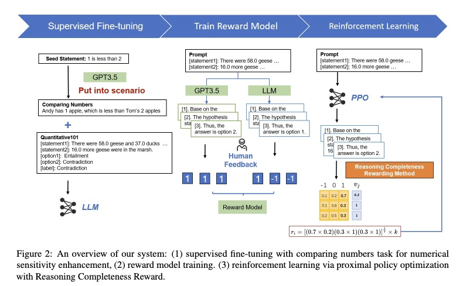
|
Enhance Numerical Sensitivity and Reasoning Completeness for Quantitative Understanding
Xinyue Liang*, Jiawei Li*, Yizhe Yang, Yang Gao
NAACL-SemEval, 2024
|
|
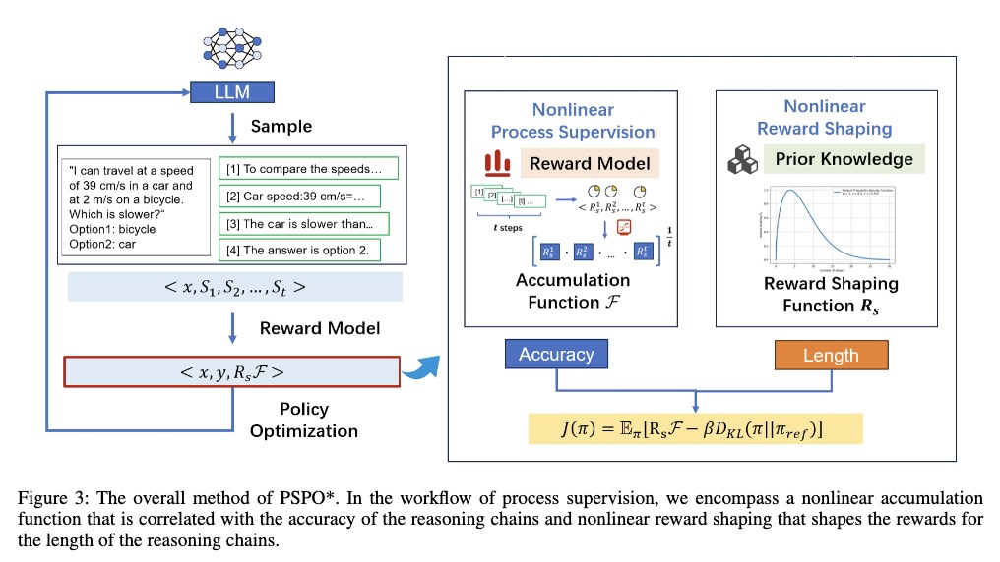
|
PSPO*: An Effective Process-supervised Policy Optimization for Reasoning Alignment
Jiawei Li, Xinyue Liang, Junlong Zhang, Yizhe Yang, Chong Feng, Yang Gao
Preprint, 2024
|
|
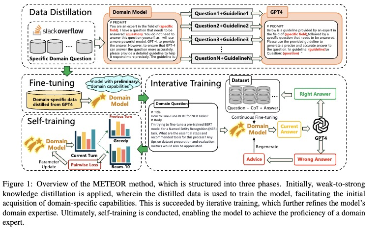
|
METEOR: Evolutionary Journey of Large Language Models from Guidance to Self-Growth
Jiawei Li, Xiaoang Xu, Yang Gao
Preprint, 2024
|
|
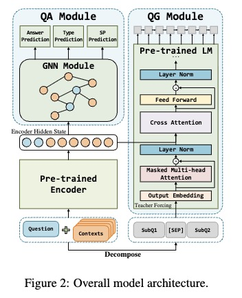
|
Ask to understand: Question generation for multi-hop question answering
Jiawei Li, Mucheng Ren, Yang Gao, Yizhe Yang
CCL, 2023
|
|
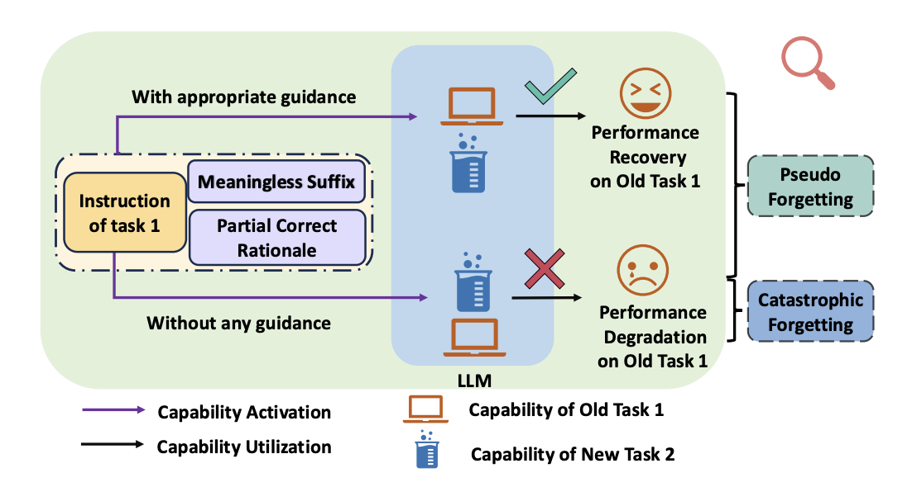
|
Unveiling and Addressing Pseudo Forgetting in Large Language Models
Huashan Sun, Yizhe Yang, Yinghao Li, Jiawei Li, Yang Gao
ACL 2025 Findings, 2025
|
|
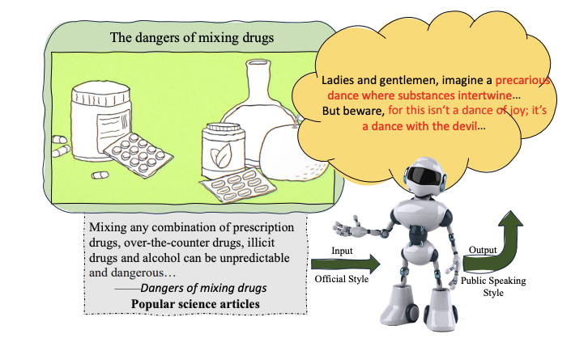
|
PSST: A Benchmark for Evaluation-driven Text Public-Speaking Style Transfer
Huashan Sun, Yixiao Wu, Yuhao Ye, Yizhe Yang, Yinghao Li, Jiawei Li and Yang Gao
EMNLP 2024 Findings, 2024
|
|
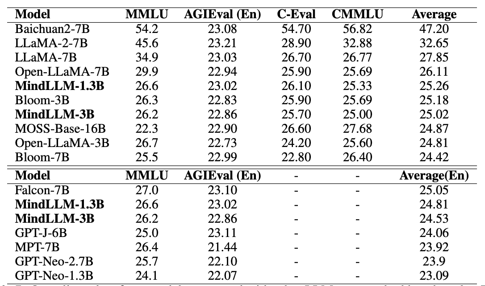
|
MindLLM: Pre-training Lightweight Large Language Model from Scratch, Evaluations and Domain Applications
Yizhe Yang, Huashan Sun, Jiawei Li, Runheng Liu, Yinghao Li, Yuhang Liu, Yang Gao and Heyan Huang
AI Open, 2024
|
|
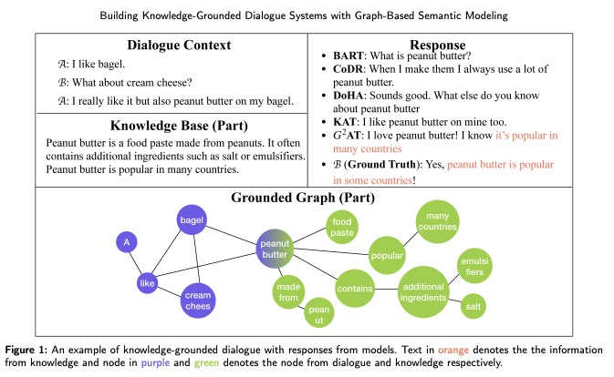
|
Enhance Knowledge Grounded Dialogue via Ground Graph
Yizhe Yang, Yang Gao, Jiawei Li, Heyan Huang
KBS, 2023
|
|
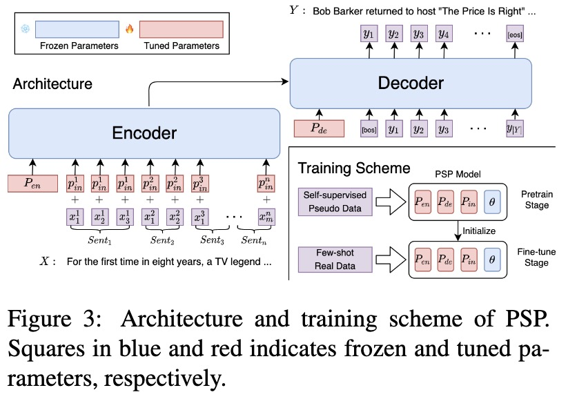
|
PSP: Pre-trained Soft Prompts for Few-Shot Abstractive Summarization
Xiaochen Liu, Yang Gao, Yu Bai, Jiawei Li, Yinan Hu, Heyan Huang, Boxing Chen
COLING, 2022
|
Education
Doctor of Engineering, Artificial Intelligence, Beijing Institute of Technology (2023.09 - 2027.06).
Academic Master's Degree, Computer Science and Technology, Beijing Institute of Technology (2020.09 - 2023.06).
Bachelor of Engineering, Software Engineering, Northeastern University (2016.09 - 2020.06).
|
Experience
Research Intern at NLP, Meituan, supervised by Dr. Yu Chen. (2023.06 - 2024.04).
Algorithm Intern, Meituan, supervised by Dr. Rong An. (2022.05 - 2022.09).
|
|
{kind=link}